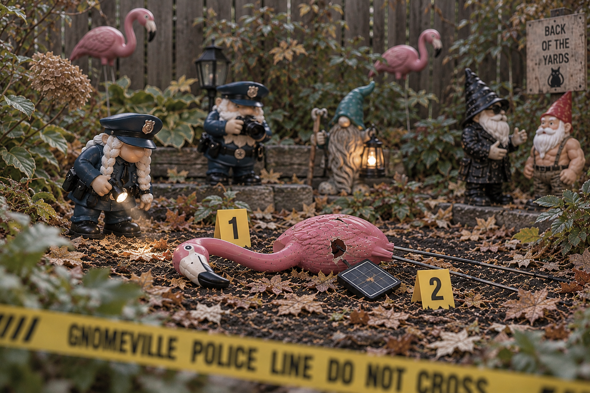

POLICE INVESTIGATE SUSPECTED FLAMINGO BATTERY
Squirrel suspects remain at large following a troubling attack on a solar-powered flamingo.

Investigators are reviewing evidence of a forcibly detached solar panel. The victim’s name is being withheld.
Read the Full Story →Mayor's Statement
🐸🍷
“Let me be clear: Gnomeville is resilient, united, and absolutely not panicking... despite appearances.”
Mayor Thimblewick